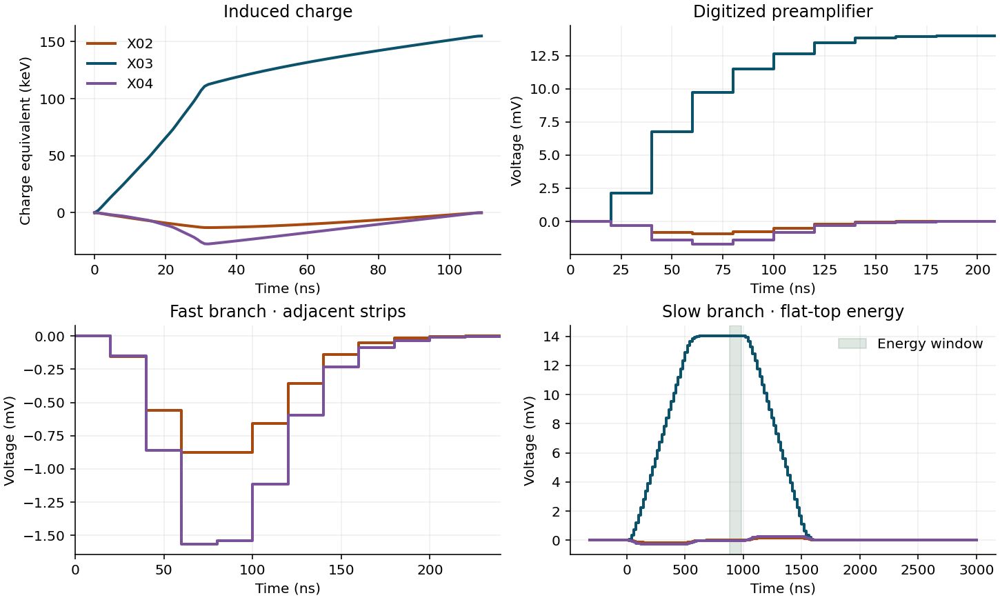

Saved studies and teaching signals
Saved results
Open the current GeGI image, follow the signal chain, or explore a complete Cs137 campaign. Each study retains its own event identities, settings and denominators.
One exposure with Cs-137 and Co-60
In this 0.25 s simulated exposure, 862 of 911 qualified Ge deposit groups matched a unique trigger, and 484 had a qualified slow energy.
Independent source clocks used example activities of 37 kBq for Cs-137 and 37 kBq for Co-60. Delayed deposits from earlier parent decays can enter the exposure. The electronics start from zero with a 50 MS/s digitizer and 15 µV RMS synthetic noise.
Of 1,071 Ge deposit groups, 47 lacked a usable native charge signal and 113 more fell in or near gaps in the signal history. Among qualified groups, 45 were missed, 4 shared 2 merged triggers and 0 had ambiguous matches.
| Arrival neighborhood | Ge groups | Qualified | Unique match | Matched slow energy |
|---|---|---|---|---|
| Isolated | 1,025 | 887 | 842/887 | 471/887 |
| Another Ge group within 6 µs | 46 | 24 | 20/24 | 13/24 |
Over 0.225318 s of qualified ADC time, the readout returned 864 triggers and 484 usable slow energies. 0 triggers lacked a matching deposit. A trigger uses the coincident rise on both faces. A slow energy also requires a qualified collecting strip on each face and agreement between their energies.
484 entries in 20 keV bins from 0 to 3000 keV, with lower bin edges included. Underflow 0, overflow 0, exact zeros 0. The spectrum includes every qualified trigger with a slow-energy estimate.
Arrival neighborhoods use deposition times from both sources. These counts apply to the qualified portion of the simulated exposure. The JSON includes the signal-history rules, matching criteria and the noiseless close-pair cross-check. Open the exposure census, spectrum and settings (JSON).
When can GeGI resolve two close pulses?
With nominal noise, all groups sustained two matched triggers from 300 ns on this scan. Same- and adjacent-strip groups met both energy and XY tolerances from 1000 ns. Far-strip energy met its tolerance from 300 ns.
Two simulated native charge responses were shifted in time and added before digitization. The same electronic stream supplied the triggers, energies and strip positions. Same-strip pulses share both collecting strips. Adjacent pulses differ by one X strip, and one adjacent pair shares a Y strip. Far pulses are separated by at least three strip pitches on each face.
Triggers requires exactly two reconstructed triggers at a nonzero delay, each within ±60 ns of the expected trigger time. Energy and XY also require the correct collecting strips for both pulses and a qualified energy or both calibrated lateral coordinates, respectively. Each fraction uses all trials at that delay and strip relation.
| Delay (ns) | Same strips | Adjacent strips | Far strips | ||||||
|---|---|---|---|---|---|---|---|---|---|
| Triggers | Energy | XY | Triggers | Energy | XY | Triggers | Energy | XY | |
| 0 | 0/12 | 0/12 | 0/12 | 0/12 | 0/12 | 0/12 | 0/12 | 0/12 | 0/12 |
| 20 | 0/12 | 0/12 | 0/12 | 0/12 | 0/12 | 0/12 | 0/12 | 0/12 | 0/12 |
| 40 | 0/12 | 0/12 | 0/12 | 0/12 | 0/12 | 0/12 | 0/12 | 0/12 | 0/12 |
| 60 | 0/12 | 0/12 | 0/12 | 0/12 | 0/12 | 0/12 | 0/12 | 0/12 | 0/12 |
| 100 | 0/12 | 0/12 | 0/12 | 0/12 | 0/12 | 0/12 | 0/12 | 0/12 | 0/12 |
| 140 | 0/12 | 0/12 | 0/12 | 0/12 | 0/12 | 0/12 | 0/12 | 0/12 | 0/12 |
| 200 | 2/12 | 0/12 | 0/12 | 2/12 | 0/12 | 0/12 | 3/12 | 2/12 | 0/12 |
| 300 | 12/12 | 0/12 | 0/12 | 12/12 | 0/12 | 0/12 | 12/12 | 12/12 | 0/12 |
| 400 | 12/12 | 0/12 | 0/12 | 12/12 | 0/12 | 0/12 | 12/12 | 12/12 | 0/12 |
| 500 | 12/12 | 0/12 | 0/12 | 12/12 | 0/12 | 0/12 | 12/12 | 12/12 | 0/12 |
| 600 | 12/12 | 0/12 | 0/12 | 12/12 | 0/12 | 0/12 | 12/12 | 12/12 | 0/12 |
| 800 | 12/12 | 0/12 | 0/12 | 12/12 | 6/12 | 6/12 | 12/12 | 12/12 | 0/12 |
| 1000 | 12/12 | 12/12 | 12/12 | 12/12 | 12/12 | 12/12 | 12/12 | 12/12 | 0/12 |
| 1200 | 12/12 | 12/12 | 12/12 | 12/12 | 12/12 | 12/12 | 12/12 | 12/12 | 0/12 |
| 1600 | 12/12 | 12/12 | 12/12 | 12/12 | 12/12 | 12/12 | 12/12 | 12/12 | 0/12 |
| 2000 | 12/12 | 12/12 | 12/12 | 12/12 | 12/12 | 12/12 | 12/12 | 12/12 | 0/12 |
| 3000 | 12/12 | 12/12 | 12/12 | 12/12 | 12/12 | 12/12 | 12/12 | 12/12 | 0/12 |
| 4500 | 12/12 | 12/12 | 12/12 | 12/12 | 12/12 | 12/12 | 12/12 | 12/12 | 0/12 |
| 6000 | 12/12 | 12/12 | 12/12 | 12/12 | 12/12 | 12/12 | 12/12 | 12/12 | 0/12 |
Compare without electronic noise
| Delay (ns) | Same strips | Adjacent strips | Far strips | ||||||
|---|---|---|---|---|---|---|---|---|---|
| Triggers | Energy | XY | Triggers | Energy | XY | Triggers | Energy | XY | |
| 0 | 0/12 | 0/12 | 0/12 | 0/12 | 0/12 | 0/12 | 0/12 | 0/12 | 0/12 |
| 20 | 0/12 | 0/12 | 0/12 | 0/12 | 0/12 | 0/12 | 0/12 | 0/12 | 0/12 |
| 40 | 0/12 | 0/12 | 0/12 | 0/12 | 0/12 | 0/12 | 0/12 | 0/12 | 0/12 |
| 60 | 0/12 | 0/12 | 0/12 | 0/12 | 0/12 | 0/12 | 0/12 | 0/12 | 0/12 |
| 100 | 0/12 | 0/12 | 0/12 | 0/12 | 0/12 | 0/12 | 0/12 | 0/12 | 0/12 |
| 140 | 0/12 | 0/12 | 0/12 | 0/12 | 0/12 | 0/12 | 0/12 | 0/12 | 0/12 |
| 200 | 3/12 | 0/12 | 0/12 | 3/12 | 0/12 | 0/12 | 3/12 | 2/12 | 0/12 |
| 300 | 12/12 | 0/12 | 0/12 | 12/12 | 0/12 | 0/12 | 12/12 | 12/12 | 0/12 |
| 400 | 12/12 | 0/12 | 0/12 | 12/12 | 0/12 | 0/12 | 12/12 | 12/12 | 0/12 |
| 500 | 12/12 | 0/12 | 0/12 | 12/12 | 0/12 | 0/12 | 12/12 | 12/12 | 0/12 |
| 600 | 12/12 | 0/12 | 0/12 | 12/12 | 0/12 | 0/12 | 12/12 | 12/12 | 0/12 |
| 800 | 12/12 | 0/12 | 0/12 | 12/12 | 6/12 | 6/12 | 12/12 | 12/12 | 0/12 |
| 1000 | 12/12 | 12/12 | 12/12 | 12/12 | 12/12 | 12/12 | 12/12 | 12/12 | 0/12 |
| 1200 | 12/12 | 12/12 | 12/12 | 12/12 | 12/12 | 12/12 | 12/12 | 12/12 | 0/12 |
| 1600 | 12/12 | 12/12 | 12/12 | 12/12 | 12/12 | 12/12 | 12/12 | 12/12 | 0/12 |
| 2000 | 12/12 | 12/12 | 12/12 | 12/12 | 12/12 | 12/12 | 12/12 | 12/12 | 0/12 |
| 3000 | 12/12 | 12/12 | 12/12 | 12/12 | 12/12 | 12/12 | 12/12 | 12/12 | 0/12 |
| 4500 | 12/12 | 12/12 | 12/12 | 12/12 | 12/12 | 12/12 | 12/12 | 12/12 | 0/12 |
| 6000 | 12/12 | 12/12 | 12/12 | 12/12 | 12/12 | 12/12 | 12/12 | 12/12 | 0/12 |
Controls and stable scan ranges
The controls replay each input pulse by itself. The paired-energy tolerance is 2.0% relative to the isolated energy estimate. The paired XY tolerance is 1 mm radially from the isolated position estimate.
| Strip relation | Noise | Matched trigger | Energy | XY | Correct pixel |
|---|---|---|---|---|---|
| Same strips | Nominal electronic noise | 16/16 | 16/16 | 16/16 | 16/16 |
| Adjacent strips | Nominal electronic noise | 16/16 | 16/16 | 16/16 | 16/16 |
| Far strips | Nominal electronic noise | 16/16 | 16/16 | 8/16 | 16/16 |
| Same strips | Without electronic noise | 16/16 | 16/16 | 16/16 | 16/16 |
| Adjacent strips | Without electronic noise | 16/16 | 16/16 | 16/16 | 16/16 |
| Far strips | Without electronic noise | 16/16 | 16/16 | 8/16 | 16/16 |
Empty controls had 0 false triggers in 16 noisy windows and 0 in 2 noiseless windows.
A stable scan range starts when all trials pass at that delay and every subsequent sampled delay, with at least 3 sampled delays in the range. A dash marks a missing all-pass range.
| Strip relation | Noise | Triggers | Energy | XY | Energy within tolerance | XY within tolerance | Energy and XY within tolerance |
|---|---|---|---|---|---|---|---|
| Same strips | Nominal electronic noise | 300 | 1000 | 1000 | 1000 | 1000 | 1000 |
| Adjacent strips | Nominal electronic noise | 300 | 1000 | 1000 | 1000 | 1000 | 1000 |
| Far strips | Nominal electronic noise | 300 | 300 | — | 300 | — | — |
| Same strips | Without electronic noise | 300 | 1000 | 1000 | 1000 | 1000 | 1000 |
| Adjacent strips | Without electronic noise | 300 | 1000 | 1000 | 1000 | 1000 | 1000 |
| Far strips | Without electronic noise | 300 | 300 | — | 300 | — | — |
The 1,368 paired trials used ordered energies of 250 + 250, 250 + 125, 125 + 250 keV with sampling phases of 0 and 10 ns. Nominal noise was 15 µV RMS before analog-to-digital conversion. Far-strip pairs include a location outside the position calibration. The sampled responses characterize the nominal simulated electronics.
Open double-pulse counts, errors and scan settings (JSON).
How neighboring GeGI strips sense a drifting charge
During drift, both neighboring strips respond to the moving carriers. Their induced charge returns to zero, while their fast areas differ. The collecting strip supplies the slow energy signal.

Strip measurements for this event
| Strip | Largest |Q| (keV equivalent) | Final Q (keV equivalent) | Fast area (V·ns) | Slow energy (keV) |
|---|---|---|---|---|
| X02 | 13.06 | 0.00 | -0.074 | Below threshold |
| X03 | 154.97 | 154.97 | 2.521 | 154.98 |
| X04 | 27.41 | 0.00 | -0.124 | Below threshold |
Event samples and readout settings · View the saved Compton study
Position check on independent simulated points
The time difference between the two collecting strips selects a depth-dependent calibration of the neighboring signals. Training used 396 injected points on four strip pairs. On 80 separate 500 keV points, 40 returned both lateral coordinates. Using the strip center for each unavailable axis, the radial XY RMS error changed from 1.82 to 1.27 mm. The depth RMS error was 0.28 mm on 80 points. These errors compare simulated coordinates within the sampled region.
Interaction ordering benchmark
Which interaction could have happened first?
The run started with 5,000 simulated photons of 662 keV each. Of the 42 that deposited energy in germanium, 4 had one energy-compatible pairing between faces. The two angle columns assume scattering from a stationary free electron followed by full absorption. The last column checks the inferred order against the simulated photon history. It uses parent interactions depositing at least 5 keV.
| Primary | Deposited in Ge (keV) | Site A (keV) | Site B (keV) | A → B | B → A | Transport reference |
|---|---|---|---|---|---|---|
| 1412 | 470.40 | X02/Y08 · 363.04 | X03/Y09 · 107.37 | Excluded | 47.26° | 4 significant interactions |
| 1575 | 370.10 | X10/Y05 · 236.79 | X11/Y04 · 133.32 | Excluded | 77.13° | A → B |
| 2950 | 662.00 | X06/Y10 · 488.78 | X08/Y11 · 173.25 | Excluded | 43.41° | A → B |
| 3472 | 418.13 | X09/Y02 · 169.36 | X10/Y01 · 248.79 | 80.32° | 142.67° | A → B |
Primary 2950 deposited the full source energy in germanium. The energy model excludes the order recorded by transport. Its fitted sites lie 0.45 and 2.49 mm from their simulated charge-deposition centroids. Across 16 independent two-site mixtures, fitting positions within the strips changed lateral RMS error from 1.75 to 0.94 mm.
Two further runs used 5,000 photons at x = -40 mm and 5,000 at x = +40 mm. The runs yielded 16 and 12 unique energy pairings, respectively. Of those, 1 and 3 deposited the full photon energy in germanium and matched the cells of both significant transport interactions. The energy model allowed both orders in 4/4 matched events.
Two-site strip-pairing benchmark
Pairing X and Y strips in two-site events
Slow-branch energies left two possible X–Y pairings in 8/8 fixed simulated mixtures. The sites had equal energies and shared neighboring strips. Combining signed fast area with centered constant-fraction discriminator (CFD) times ranked the known simulated pairing first in 8/8. Within the control scale, 6/8 had only the known pairing and 2/8 still had both. The reconstruction retains both alternatives in 8/8 cases.
| Digital observable | Lower residual | Within control scale | |||||
|---|---|---|---|---|---|---|---|
| Known | Alternate | Tie | Known only | Alternate only | Both | Neither | |
| X–Y timing within each pair | 0 | 1 | 7 | 0 | 0 | 8 | 0 |
| Centered timing of four collecting strips | 7 | 1 | 0 | 6 | 0 | 2 | 0 |
| Signed fast area of nine strips | 7 | 1 | 0 | 6 | 0 | 2 | 0 |
| Signed fast area + centered timing | 8 | 0 | 0 | 6 | 0 | 2 | 0 |
The control scale is the largest residual at known positions in 40 separately composed simulated control mixtures. The same model supplied 396 training injections. These fixed mixtures use nominal readout. Experimental pairing accuracy remains unmeasured. Case counts and fit scores.
In 16 separate mixtures at held-out positions, the same control scale left only the known pairing in 12/16 using fast area alone and in 8/16 using both observables, with both pairings within scale in 4/16 and 8/16, respectively.
Learn the chain · six representative Cs137 signals
Six saved signals from the four-case Cs137 10K study, from deposits through charge, shaping and peak ADC. Illustrative examples, not a statistical sample.
Cs137 10K · four detector cases
AK02, SAP22, GeRC02 Li50min and KMRC01 candidate · 10,000 initial Cs137 decays in each of four separate cases. Charge/readout, stage spectra, radiation events and complete scalar ledgers.
Cs137 1M · two detector cases
AK02 and SAP22 · one million initial decays per detector · nominal cryostat. Available views are ensemble truth/response spectra and complete scalar group records.
Retired small studies
Earlier gamma and two-position examples
The 200-primary bare-detector, 40-primary cryostat gamma and earlier GeGI two-position public bundles have been retired. Their scientific originals remain in the local workspace. Use the current GeGI study or six Cs137 teaching signals above; these are separate datasets.